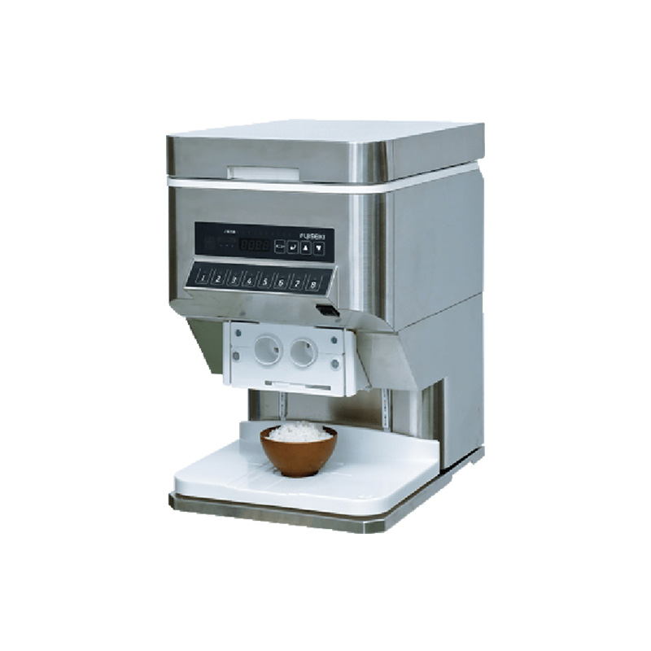

SKU: SAL-M-23
Automatic rice dispensing machine
| Sub-Category | Spices Processing |
| Model | RD-25 |
| Brand | KMG |
| Material | Stainless Steel SS 304 |
Automatic Rice Dispensing Machine is designed to deliver rice quickly and accurately for both bulk and retail applications. System ensures smooth and controlled flow while maintaining consistent weight in every cycle. Advanced weighing mechanism helps reduce wastage and improves overall efficiency. Built with durable materials, it supports long-term continuous operation with minimal maintenance. Easy integration with packaging lines makes it suitable for modern automated setups. Suitable for rice mills, supermarkets, and packaging units where hygiene, speed, and precision are essential for daily operations.
Rate this product:
Click a star to submit your review